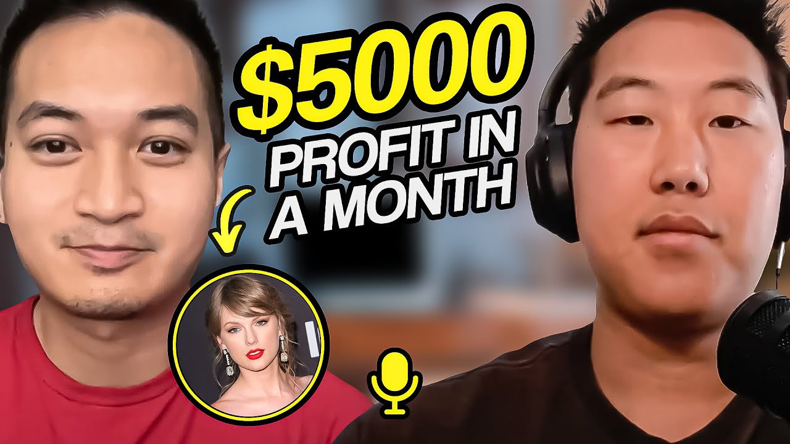

How Sunny Built a $5,000+/Month Airbnb Business Near Texas Medical Center (2026 Case Study)

Sunny earns $2,000-$5,000+ per month in cash flow from 1 Airbnb property near Texas Medical Center in Houston. Working full-time as a respiratory therapist, he discovered an underserved niche in one of America's most competitive Airbnb markets: families visiting loved ones at the world's largest medical complex. When Taylor Swift came to town, he made over $5,000 profit in a single month from just one property.
This case study breaks down exactly how Sunny dominated a saturated market by finding a niche and running with it, including his empathetic landlord pitch, home-away-from-home design philosophy, and the dynamic pricing strategy that captured thousands in event revenue he would have otherwise missed.
In this article:
Quick Results: Sunny's Airbnb Arbitrage Numbers
| Metric | Value | Context |
|---|---|---|
| Peak Monthly Profit | $5,216 | Taylor Swift concert month |
| Minimum Monthly Profit | $2,000+ | Consistent baseline |
| Properties | 1 | 5BR townhouse, Houston |
| Location | 6 minutes | From Texas Medical Center |
| Property Type | 4-story townhouse | 5 bedrooms, 2.5 baths |
| Time to First Property | 4 months | Thanksgiving to March launch |
| Weekly Setup Hours | 12 hours | During research/furnishing phase |
| Daily Management | 1 hour | After property is live |
| Guest Rating | 5 stars | Home away from home feedback |
| 3-Year Goal | 5 properties | $2-3K net per property |
Sunny's Background: From Respiratory Therapist to Airbnb Entrepreneur
You don't need real estate experience to succeed with Airbnb arbitrage. Sunny started with zero property investment knowledge but leveraged his medical field expertise to identify an underserved market that others overlooked.
The Desire to Provide
Sunny works as a respiratory therapist at Texas Medical Center in Houston, where he's been for almost three years. But his drive to build wealth goes deeper than career advancement. When his father passed away in 2015, Sunny was just 21 years old. He inherited not just a house, but a responsibility his father had prepared him for since childhood.
"My dad prepped me for a long time as I was growing up. He said one day I would not be here, it's up to you to take care of your mom. And when she's gone you have to know how to take care of yourself. And when you have a family you have to take care of that. So he built that into me."
This responsibility drove Sunny to think beyond his day job. As the head of household caring for his mother, he needed income streams that could provide security regardless of what happened to his primary career. The pandemic had shown healthcare workers how quickly things could change, and Sunny wanted to be prepared.
Coming from an Asian background, Sunny felt a cultural weight to provide for his family. But rather than seeing this as a burden, he channeled it into motivation. Every side hustle research session, every Zillow search, every late night learning about real estate was an investment in his family's future security.
Discovering Airbnb Arbitrage
Sunny knew he wanted to do real estate investing even before becoming a respiratory therapist, but he needed capital first. After building savings over several years of work, he was ready to take action but unsure where to start. The barrier wasn't money anymore. It was knowledge.
One day while scrolling Instagram, Sunny came across Preston's profile. The content resonated immediately. Here was someone who had built exactly what Sunny wanted, sharing the actual strategies rather than just the results.
"I was on Instagram, I was on YouTube. I came across your IG profile and I watched your reels and I just got hooked on. And I signed up for your class and that's how I dive into it."
The decision to join Legacy Investing Show wasn't just about the content. It was about finding a community of like-minded people pursuing the same goals. At his hospital, Sunny discovered colleagues who were also doing real estate investing, creating opportunities to learn from each other and share experiences.
The Airbnb Arbitrage Journey: Sunny's Timeline
2022: Building Capital
Situation: Working as a respiratory therapist, saving money, researching side hustle options.
Sunny spent his early career focused on building financial stability. As a respiratory therapist, he worked demanding shifts but also had multiple days off per week. This schedule would eventually prove perfect for building a side business. He used this time to research various investment options, always keeping real estate at the top of his list.
The key during this phase was patience. Sunny didn't rush into anything without proper preparation. He built his savings, observed people who were already successful in real estate, and waited for the right opportunity to present itself.
Late 2022: Discovery and Decision
Situation: Discovered Legacy Investing Show around Thanksgiving, began intensive research and property hunting.
After joining the program, Sunny dedicated about 12 hours per week to learning and implementing. With his work schedule giving him several days off, he could focus intensively on the business without sacrificing his primary income.
The education phase covered everything from finding properties to pitching landlords to furnishing for maximum bookings. But Sunny's breakthrough came when he combined this general knowledge with his specific expertise. Working at Texas Medical Center daily, he had insider knowledge about an untapped market.
"As I'm working I'm like, you know, there are families who are visiting the medical center who want to stay with the children or the relatives for extended periods of time or just some visitors from out of state coming in. They want to stay temporarily and they go back home."
March 2023: First Airbnb Launch
Situation: Launched first property, achieved immediate bookings, experienced viral demand during Taylor Swift concert.
By the end of February, Sunny had completed his property setup. He found a 4-story townhouse with 5 bedrooms and 2.5 bathrooms on Zillow, just 6 minutes from Texas Medical Center. The location was strategic, but the pitch is what sealed the deal.
The landlord had previously rented to families with children due to a nearby excellent school. When Sunny proposed serving medical families and healthcare workers instead, the landlord connected with the purpose. It wasn't about making money. It was about helping families during difficult times.
First Property Stats:
-
Type: 4-story townhouse
-
Bedrooms: 5 (King, 2 Queens, Twin beds, Game room converted to bedroom)
-
Bathrooms: 2.5
-
Location: 6 minutes from Texas Medical Center
-
Features: Backyard patio with string lights, living room with TV and games, Jack and Jill bathroom, master suite with high ceilings
-
First month: Fully booked
-
Best month profit: $5,216
How to Choose a Market for Airbnb Arbitrage: Sunny's Houston Strategy
Houston is one of America's most saturated Airbnb markets, but Sunny found success by identifying an underserved niche. Rather than competing with thousands of generic listings, he targeted a specific demographic with specific needs.
Why Texas Medical Center Works
Texas Medical Center is the world's largest medical complex, spanning 2.1 square miles with 60+ institutions. Every day, thousands of families travel from across the country and world to visit loved ones receiving treatment. These families need somewhere to stay, often for extended periods.
The Hotel Problem: Hotels near Texas Medical Center are expensive and impersonal. A family visiting a sick child or elderly parent doesn't want to feel like they're on a business trip. They want privacy, space to decompress, and somewhere that feels like home during an incredibly stressful time.
The Sunny Solution: A 5-bedroom townhouse that can accommodate extended family, with a homely vibe that helps people feel comfortable during difficult circumstances. Instead of cramped hotel rooms, families get a living room to gather in, a kitchen to prepare home-cooked meals, and a backyard to escape the hospital environment.
"If there's a property around here, instead of just going to a hotel you can book a house that has a sense of privacy and enough space for enough visitors."
Multiple Demand Drivers
While medical families were Sunny's primary target, his location near NRG Stadium opened up additional revenue streams:
Medical Travelers:
-
Families visiting patients at Texas Medical Center
-
Weekly stays for extended treatments
-
Willing to pay premium for privacy and space
-
Appreciative guests who leave great reviews
Business Professionals:
-
Corporate visitors for conferences and meetings
-
Travel nurses and healthcare workers on temporary assignments
-
Teams visiting Houston offices
Event Travelers:
-
Taylor Swift concert generated $5,000+ profit (10 guests, 2 nights)
-
NRG Stadium events bring consistent demand
-
Weekend visitors exploring downtown Houston
This diversity of demand drivers provides income stability. When medical travel slows, events pick up. When events are quiet, business travelers fill the gaps.
Airbnb Arbitrage Strategies That Actually Work: Sunny's Playbook
The difference between profitable and unprofitable Airbnb arbitrage in a saturated market comes down to differentiation. Sunny's success stems from four core strategies that set him apart from generic listings.
Strategy 1: Medical Family Niche Targeting
What it is: Positioning the property specifically for families visiting loved ones at Texas Medical Center.
Why it works: When someone searches "Airbnb near Texas Medical Center," they're likely visiting a hospital. By designing the listing, amenities, and messaging specifically for this audience, Sunny's property appears more relevant than generic listings that happen to be nearby.
Medical families have specific needs that most Airbnb hosts don't consider. They need multiple bedrooms for extended family members who want to take turns at the hospital. They need a kitchen to prepare comfort food. They need a quiet space to rest between hospital visits. And they need somewhere that feels like home during one of life's most challenging experiences.
Sunny's Results with This Strategy:
-
Two guests in his first months were families visiting children undergoing surgery
-
Weekly stays at premium rates
-
5-star reviews mentioning "home away from home"
-
Repeat bookings from families returning for follow-up treatments
"That's one of the views that my guests told me, it feels home away from home. And I feel like that's what I want for my properties to feel like, it's not just like a place that I just bought so I can make money off of it, it's also my home that I'm willing to share."
Strategy 2: The Empathetic Landlord Pitch
What it is: Pitching the arbitrage opportunity as a service to families rather than just a business proposition.
Why it works: Landlords are people too. When Sunny explained his purpose, it resonated emotionally. He wasn't just asking for permission to sublease. He was proposing to provide a service that helps families during difficult times.
The landlord had previously rented the townhouse to families with children due to a nearby excellent school. Sunny's pitch aligned with the landlord's existing values. Instead of changing the property's purpose, he was extending it to serve a different type of family in need.
"The level was very empathetic about that. I guess that's what hooked them on. It's like oh this is a very nice idea. We didn't know the idea of subleasing before... that bond to help others, to help others is what helped my pitch to ask for his permission to sublease."
Sunny's Results with This Strategy:
-
Landlord approval despite no prior experience with subleasing
-
Positive ongoing relationship built on transparency
-
Foundation of trust for potential future properties
Strategy 3: Home Away from Home Design
What it is: Furnishing and decorating the property to feel like a comfortable home rather than a hotel or generic rental.
Why it works: Medical families are stressed. Event travelers want to relax. Business visitors want comfort. A space that feels like home helps guests decompress, leading to better reviews and repeat bookings.
Sunny's design philosophy prioritizes warmth and functionality over flashy Instagram-worthy moments. The living room has comfortable seating for family gatherings. The kitchen is fully equipped for home-cooked meals. The backyard patio with string lights creates a peaceful outdoor escape.
Sunny's Design Elements:
-
Backyard patio with string lights: The "money shot" for photos, creates relaxing ambiance
-
Living room with sofa, TV, and games: Space for families to gather and unwind
-
Fully equipped kitchen: Enables guests to prepare their own meals
-
Multiple bedroom configurations: King, Queens, Twins to accommodate different family sizes
-
Jack and Jill bathroom: Family-friendly design from the original layout
-
High ceilings in master suite: Creates open, spacious feeling
-
Fourth floor converted space: Bedroom plus private work area for conference calls
Photography Strategy:
Sunny invested in professional photography, recognizing that first impressions drive bookings. The photos highlight the homely vibe rather than trying to make the space look like a luxury hotel. Guests see a place they'd want to stay, not a place that looks nice in photos but feels cold in person.
"Main point one is yes, always get the photos professionally done. I furnished this way just by scrolling through all the websites, different websites, with the vision that this is a very homely vibe so that when people are visiting they're not overblown with a bunch of different designs."
Strategy 4: Dynamic Pricing for Event Capture
What it is: Using Price Labs to automatically adjust pricing based on local events and demand.
Why it works: Without dynamic pricing, Sunny would have booked his Taylor Swift weekend at normal rates, leaving thousands of dollars on the table. The software detected the demand spike and adjusted prices accordingly.
The Taylor Swift concert story illustrates this perfectly. Sunny noticed certain dates had unusually high prices in Price Labs. A quick Google search revealed Taylor Swift was coming to Houston. Ten guests booked two nights at premium rates, generating over $5,000 in profit for that single month.
"I would never know that Taylor Swift was coming in that weekend if I used Price Labs. I looked at those days, I'm like why are these dates more expensive than the others? Is there something special? So with a little Google search I realized oh, Taylor Swift is coming into town. No wonder prices went up."
Sunny's Results with This Strategy:
-
Captured $5,000+ profit during Taylor Swift concert
-
Automatically optimizes pricing for NRG Stadium events
-
No manual price monitoring required
-
Prevents underpricing during high-demand periods
Sunny's Airbnb Arbitrage Results: The Numbers
Sunny generates $2,000-$5,000+ per month in net profit from 1 property. Here's the complete financial breakdown of his Airbnb arbitrage business.
Before vs. After Airbnb
| Metric | Before Airbnb | After Airbnb |
|---|---|---|
| Monthly Income Sources | Respiratory therapist salary only | Salary + $2,000-$5,000 Airbnb profit |
| Properties Managed | 0 | 1 (scaling to 5) |
| Weekly Investment Time | N/A | 1 hour/day after launch |
| Financial Security | Single income dependent | Diversified income streams |
| Future Outlook | Limited growth potential | 5 properties in 3 years |
Financial Breakdown
| Category | Details |
|---|---|
| Peak Monthly Profit | $5,216 (Taylor Swift month, fully booked) |
| Minimum Monthly Profit | $2,000+ (consistent baseline) |
| Monthly Expenses | Rent + utilities deducted from gross |
| Property Type | 5BR, 2.5BA, 4-story townhouse |
| Location Value | 6 minutes from Texas Medical Center |
Guest Type Breakdown
Sunny's diverse guest mix provides income stability:
| Guest Type | Stay Length | Description |
|---|---|---|
| Medical Families | Weekly | Parents visiting children undergoing surgery at Texas Medical Center |
| Business Travelers | Multi-day | Hess Oil Corporation group for business convention near NRG Stadium |
| Event Visitors | Weekend | Taylor Swift concert (10 guests, 2 nights, $5,000+ profit) |
| Leisure Travelers | Varies | Out-of-state visitors exploring Houston for the first time |
Key Milestones Achieved:
-
First property secured and launched within 4 months of joining program
-
Achieved 5-star guest reviews from first bookings
-
Fully booked first month of operation
-
Captured major event revenue through dynamic pricing
-
Built repeatable system for scaling to additional properties
-
Established positive landlord relationship for potential future deals
Airbnb Arbitrage Lessons: What Sunny Learned
These five lessons took Sunny from aspiring investor to $5,000/month Airbnb entrepreneur. Each one came from real experience and could save you months of trial and error.
"My biggest takeaway is that I just wish I could start this much sooner. Like I was much more confident back then. There's so many opportunities to be had and it just like you said, you just have to start now."
Lesson 1: Start Before You're Ready
The Mistake: Waiting until you feel completely prepared before taking action.
What Sunny Learned: The hardest part isn't knowing what to do. It's knowing how to start. Once you start, everything else falls into place. Sunny spent time researching, learning, and preparing, but he emphasizes that action is what creates results.
The more success you have, the more you realize you should have started sooner. But even then, it's never too late. Every day you wait is a day of potential income lost.
"One of the hardest things I say to start out is not just knowing what to do, but how to start. And once you know how to start, then it's about when. And the answer should always be just right now. Jump the gun, see where you can go, and then just keep improving from there."
Why This Matters: Analysis paralysis kills more real estate careers than bad deals. You'll never have perfect information. The people who succeed are those who start with imperfect knowledge and learn as they go.
Lesson 2: Leverage Your Existing Knowledge
The Mistake: Thinking you need specialized real estate knowledge to succeed.
What Sunny Learned: Your current career and life experience provide valuable insights that can differentiate your Airbnb business. Sunny's medical background gave him insider knowledge about an underserved market that other hosts didn't recognize.
Every career teaches transferable skills. Customer service experience helps with guest communication. Marketing knowledge improves listing optimization. Management experience translates to property operations. The key is recognizing what you already know and applying it creatively.
Why This Matters: Your unique background is a competitive advantage. Instead of trying to learn everything from scratch, leverage what you already know to identify opportunities others miss.
Lesson 3: Build Community First
The Mistake: Trying to figure everything out alone.
What Sunny Learned: Success accelerates dramatically when you're surrounded by like-minded people. Joining Legacy Investing Show connected Sunny with a community of people pursuing the same goals. At his hospital, he found colleagues who were also doing real estate investing.
"If you're surrounded by a bunch of people that don't have that ambition, whether you like it or not you're going to be the average of the five people that you're around the most."
Why This Matters: Community provides accountability, knowledge sharing, and motivation. When challenges arise, having people who understand the journey makes all the difference.
Lesson 4: Be Honest with Landlords
The Mistake: Trying to hide your Airbnb intentions or being vague about your plans.
What Sunny Learned: Transparency builds trust. Instead of trying to sneak around or present misleading information, Sunny was completely upfront about his subleasing plans. This honesty created a foundation for a positive ongoing relationship.
The landlord will find out eventually. Starting the relationship on a lie ensures it will end badly. But starting with transparency creates an opportunity for genuine partnership.
"Just be honest with him because at the end of the day they're gonna find out. It's better just to be open and honest at the beginning and then you know from there that's going to develop that foundation of having a good relationship."
Why This Matters: Long-term success requires sustainable relationships. Landlords who trust you may become partners in future deals. Those who feel deceived will never work with you again.
Lesson 5: Quality Over Quantity
The Mistake: Chasing maximum properties instead of maximum impact per property.
What Sunny Learned: You don't need dozens of properties to achieve financial freedom. Sunny's goal is 5 properties generating $2,000-$3,000 each. That's $10,000-$15,000 monthly from a small, manageable portfolio.
More importantly, quality properties create better guest experiences, leading to better reviews, higher occupancy, and premium pricing. A handful of excellent properties outperforms a large portfolio of mediocre ones.
"I want to focus more on just quality rather than just having a bunch of Airbnbs and just furnishing it. It may be generating me a good amount of profit but I'd rather focus on giving a good experience for the guests."
Why This Matters: Quality compounds. Great reviews attract more bookings. Premium experiences justify premium prices. Happy guests become repeat customers. This creates a virtuous cycle that's impossible with quantity-focused approaches.
Best Tools for Airbnb Arbitrage: Sunny's Tech Stack
Sunny manages his property efficiently using strategic tools. Here's what powers his $5,000/month business.
| Category | Tool | Purpose | Why Sunny Uses It |
|---|---|---|---|
| Dynamic Pricing | Price Labs | Automated rate optimization | Captured $5,000+ during Taylor Swift concert |
| Listing Platform | Airbnb | Primary booking channel | Largest audience for short-term rentals |
| Property Search | Zillow | Finding rental properties | Discovered his 5BR townhouse listing |
Price Labs: The Revenue Multiplier
What it does: Automatically adjusts nightly rates based on local demand, events, seasonality, and market conditions.
How Sunny uses it: Set base prices and let the algorithm optimize. Price Labs detected the Taylor Swift concert and raised rates accordingly. Without it, Sunny would have booked those nights at normal rates and missed thousands in additional profit.
Pro tip: When you see unusual price spikes in Price Labs, Google what's happening in your area. You might discover events you didn't know about and can optimize your listing messaging accordingly.
Zillow: Property Discovery
What it does: Comprehensive rental listings with filters for location, size, and price.
How Sunny uses it: Found his 4-story townhouse on Zillow during his property search. The platform made it easy to filter for properties near Texas Medical Center with enough bedrooms for families.
Pro tip: Set up alerts for new listings in your target area. Properties move fast, and being first to respond increases your chances of success.
Sunny's Advice for Airbnb Arbitrage Beginners
"This biggest takeaway is that I wish I could start this much sooner. There's so many opportunities that to be had and it just like you said, you just have to start now."
If Sunny were starting over today, here's exactly what he would do:
Step 1: Education First (Week 1-2)
Don't just Google randomly. Find a reliable source and learn systematically. Sunny credits Legacy Investing Show for providing structure to his education. The community aspect was equally valuable. He connected with people at different stages of the journey, learning from both those ahead and alongside him.
Key questions to answer:
-
How does Airbnb arbitrage actually work?
-
What are the legal requirements in your area?
-
How do you find and pitch landlords?
-
What does a successful property look like?
Step 2: Identify Your Niche (Week 3-4)
What do you know that others don't? Sunny's medical background gave him insight into an underserved market. Your career, hobbies, or location might reveal similar opportunities.
Questions to consider:
-
What brings people to your area?
-
Who is underserved by current Airbnb options?
-
What unique knowledge do you have about local demand?
-
How can you differentiate from generic listings?
Step 3: Find the Right Property (Week 5-8)
With your niche identified, search for properties that serve that market. Sunny spent time on Zillow looking for properties near Texas Medical Center with enough space for families. The search took time, but finding the right property was worth the wait.
Property criteria:
-
Location that serves your target market
-
Size and layout appropriate for your guests
-
Landlord open to subleasing conversations
-
Numbers that work (rent vs. potential revenue)
Step 4: Launch and Optimize (Week 9-12)
Sunny spent about 12 hours per week during setup, focusing on furnishing, photography, and listing optimization. The goal is creating a space that resonates with your target guests and photographs well.
Launch checklist:
-
Furnish with your target guest in mind
-
Professional photography is essential
-
Write listing copy that speaks to your niche
-
Set up dynamic pricing from day one
-
Prepare guest communication templates
Mindset Advice from Sunny
Making mistakes is expected and valuable. Don't let fear of failure prevent you from starting. Every successful Airbnb host made mistakes early on. The difference is they learned from those mistakes and kept going.
"Making mistakes is already given. You will make mistakes but that's how you learn. That's the golden tidbit. Make the mistakes so that you can learn."
Watch Sunny's Full Interview
Video highlights:
-
0:00 - Introduction and Sunny's background as respiratory therapist
-
3:30 - How Taylor Swift helped him make $5,000 profit in one month
-
6:45 - The family responsibility that drives his ambition
-
10:15 - Finding and pitching the landlord
-
15:30 - Property walkthrough and design philosophy
-
20:00 - Dynamic pricing strategy with Price Labs
-
23:45 - Advice for beginners and 3-year goals
Frequently Asked Questions
How much money can you really make with Airbnb arbitrage near hospitals?
Sunny generates $2,000-$5,000+ per month from 1 property near Texas Medical Center. During major events like the Taylor Swift concert, he made over $5,000 profit in a single month from 10 guests paying premium rates for just two nights. Regular months bring consistent $2,000+ profit.
The medical travel niche provides stable demand because hospital visits happen year-round. Unlike seasonal markets, medical centers serve patients continuously, creating consistent booking opportunities regardless of time of year.
Is Airbnb arbitrage still profitable in saturated markets like Houston?
Yes, but strategy matters more than ever. Sunny's success demonstrates that finding an underserved niche within a saturated market is the key. Instead of competing with thousands of generic listings on price, he targets medical families and event travelers with a property designed specifically for their needs.
The key factors for success in saturated markets:
-
Identify underserved demand segments
-
Design properties specifically for your target
-
Use dynamic pricing to capture event revenue
-
Compete on experience rather than price
What's the biggest risk with Airbnb arbitrage near medical centers?
Sunny's approach actually minimizes several common risks:
Demand stability: Medical travel is less seasonal than tourism. Texas Medical Center receives patients year-round, providing consistent demand regardless of vacation seasons or economic conditions.
Guest quality: Families visiting sick loved ones are typically responsible, respectful guests who appreciate a home-away-from-home experience. They're unlikely to throw parties or damage property.
Event diversification: While medical travel is the primary focus, proximity to NRG Stadium provides additional revenue opportunities during concerts, sports events, and conventions.
Start Your Airbnb Arbitrage Journey
Ready to build your own Airbnb arbitrage business like Sunny?
Learn more about Legacy Investing Show
Related Success Stories
-
How Micah Made $5,000 His First Month with One Facebook Message
-
How James Built a $7,000/Month Airbnb Business in 57 Days While Working Full-Time
-
How Rob Made $100K from 3 Airbnbs While Working a 9-to-5 and Raising Two Kids
Helpful Resources
About Legacy Investing Show
Legacy Investing Show is Preston Seo's comprehensive Airbnb arbitrage training program. Since founding, the program has:
-
Trained 2,000+ students across the United States
-
Generated $10M+ in cumulative student revenue
-
Built an active community of short-term rental investors
-
Produced numerous students earning $10K+/month
Preston Seo created Legacy Investing Show to teach the exact systems that scaled his business, providing the mentorship, scripts, and community that accelerate success.
blog resources | Watch free training
This case study is based on Sunny's video interview conducted in 2023. All statistics and quotes are directly from Sunny's experience. Individual results vary based on market, effort, and capital invested.
Last updated: March 24, 2026
Preston Seo
Real estate investor and financial educator helping people build generational wealth through smart investing strategies.
Frequently Asked Questions
How much money can you make with Airbnb arbitrage near hospitals?
Sunny generates $2,000-$5,000+ per month in cash flow from 1 property near Texas Medical Center. During events like the Taylor Swift concert, he made over $5,000 profit in a single month from 10 guests paying premium rates for just two nights.
Is Airbnb arbitrage still profitable in saturated markets like Houston?
Yes. Sunny proves that finding the right niche within a saturated market is the key. By targeting medical families visiting Texas Medical Center and event travelers near NRG Stadium, he achieved consistent bookings despite Houston's competitive market.
How do you convince a landlord to allow Airbnb subleasing?
Sunny pitched his landlord by explaining his purpose: serving medical families visiting loved ones at Texas Medical Center. The empathetic angle resonated with the landlord, who appreciated the idea of helping families during difficult times rather than just making money.
How long does it take to start an Airbnb arbitrage business?
Sunny spent about 3-4 months from research to launch. He joined the Legacy Investing Show around Thanksgiving, spent 12 hours per week researching and setting up through February, and launched his Airbnb in March. Setup time decreases significantly for additional properties.
Do you need real estate experience to start Airbnb arbitrage?
No. Sunny started with zero real estate experience as a respiratory therapist. He leveraged his medical field knowledge to identify an underserved market near Texas Medical Center and used that expertise to craft a compelling pitch to landlords.
How many hours per week does Airbnb arbitrage require?
During setup, Sunny spent about 12 hours per week over 3-4 months. Once the property launched, daily management dropped to about 1 hour per day for guest communication and cleaner coordination. Systems and automation reduce this further over time.
What is the best strategy for Airbnb in a saturated market?
Find a niche and run with it. Sunny identified medical families near Texas Medical Center as an underserved segment in Houston's crowded market. By targeting this specific demographic with relevant amenities and messaging, he stood out from generic listings.
Is Legacy Investing Show worth it for Airbnb arbitrage?
Based on Sunny's results, the program provided essential education, community connections, and actionable scripts. He went from knowing nothing about real estate to generating $5,000+ monthly profit within months of joining.
How does dynamic pricing help Airbnb hosts make more money?
Sunny used Price Labs for dynamic pricing, which automatically detected the Taylor Swift concert and raised his rates accordingly. Without dynamic pricing, he would have booked those nights at his normal rate and missed out on thousands in additional profit.
What type of property works best for Airbnb arbitrage near medical centers?
Sunny chose a 4-story townhouse with 5 bedrooms and 2.5 baths to accommodate families visiting loved ones. Features like multiple bedrooms, privacy, homely design, and outdoor space with string lights created a comfortable home away from home for guests during stressful times.